Самостоятельный review artifact. Референсы показаны для сравнения; их пиксели не используются в публичном сайте. Before исправлен после полной загрузки lazy media. Кадры after — 4394.
Главная
Before · c0c6904 / 4392 After · H / 4394
After · H / 4394
Walkthrough · EN desktop / RU mobile
Agent Ops
Before · c0c6904 / 4392 After · H / 4394
After · H / 4394
Walkthrough · EN desktop / RU mobile
Partner Portal
Before · c0c6904 / 4392 After · H / 4394
After · H / 4394
Walkthrough · EN desktop / RU mobile
TRASSIR Learn
Before · c0c6904 / 4392 After · H / 4394
After · H / 4394
Walkthrough · EN desktop / RU mobile
Vet Clinic OS
Before · c0c6904 / 4392 After · H / 4394
After · H / 4394
Walkthrough · EN desktop / RU mobile
Pawly
Before · c0c6904 / 4392 After · H / 4394
After · H / 4394
Walkthrough · EN desktop / RU mobile
Финал Agent Ops: масштаб объёма, граница внедрения
Композиционные основания
Blinkov / HA / Dounar / Garri / Victor. Сравнение приёмов, без копирования бренда и чужих показателей.
Picks: крупная роль, факты, материал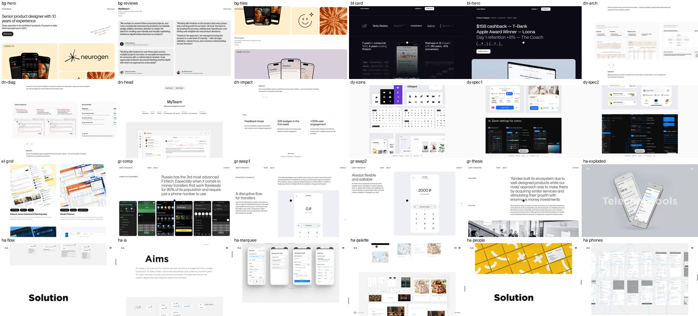
H: пять материалов разного масштаба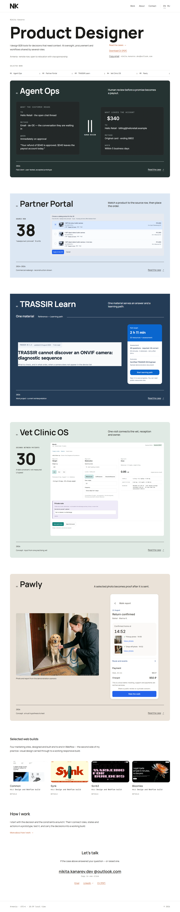
HA · пространственный вход листа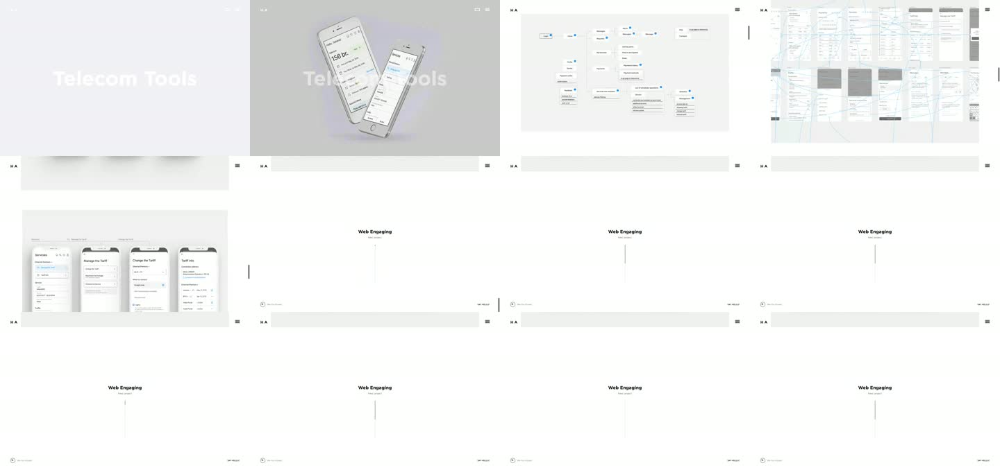
H · два последствия и рубеж человека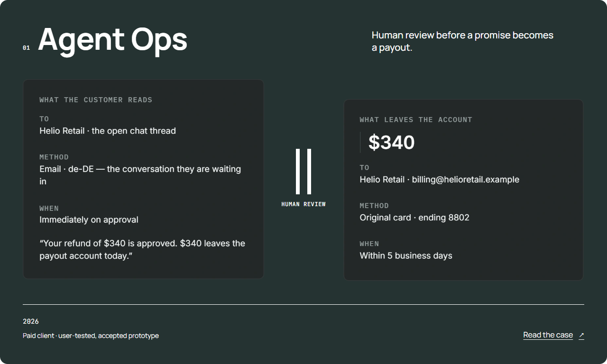
HA-MAP-01 · нотация HA-FLOW-01 · нотация
HA-FLOW-01 · нотация H · Portal flow, принятая собственная фактура
H · Portal flow, принятая собственная фактура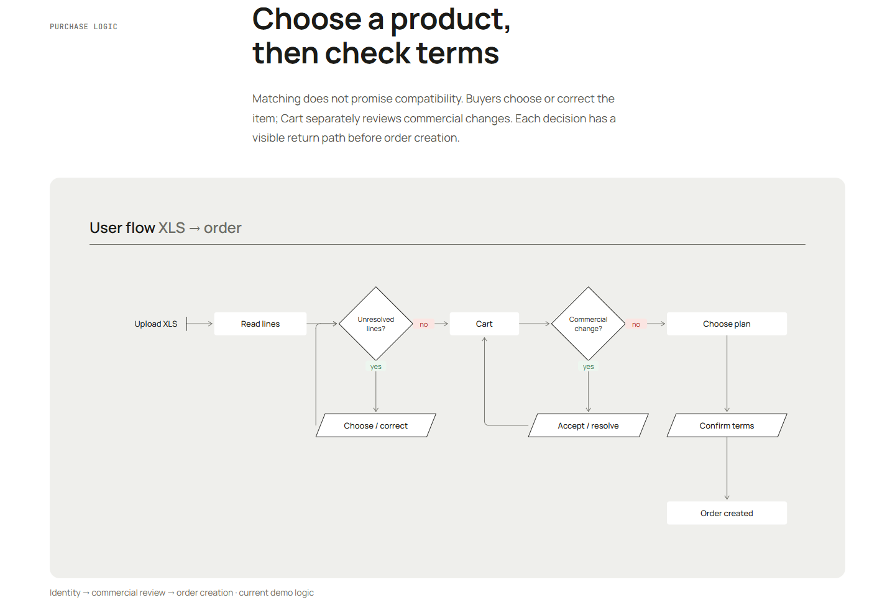
H · Learn: два входа, одна сущность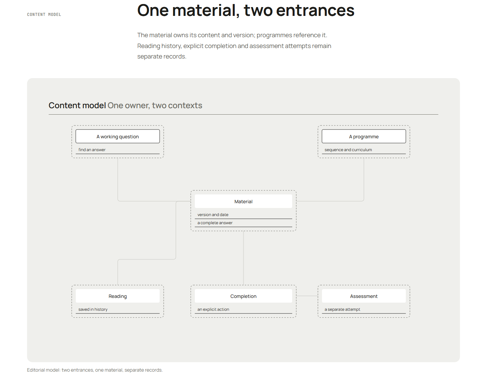
HA-DS-01 · foundation / native states H · Portal: родной системный лист, полный край
H · Portal: родной системный лист, полный край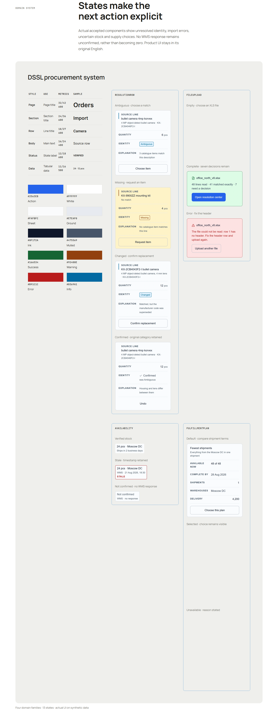
HA-PROTO-01 · реальные экраны и связи H · Vet: роли, состояния и реальные экраны
H · Vet: роли, состояния и реальные экраны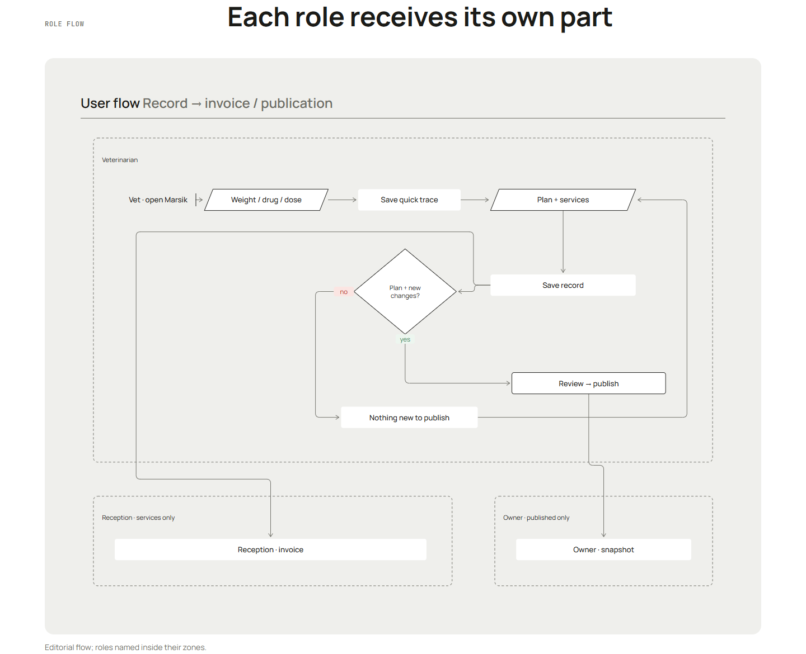
Multiply · отдельный кейс Victor, другой материал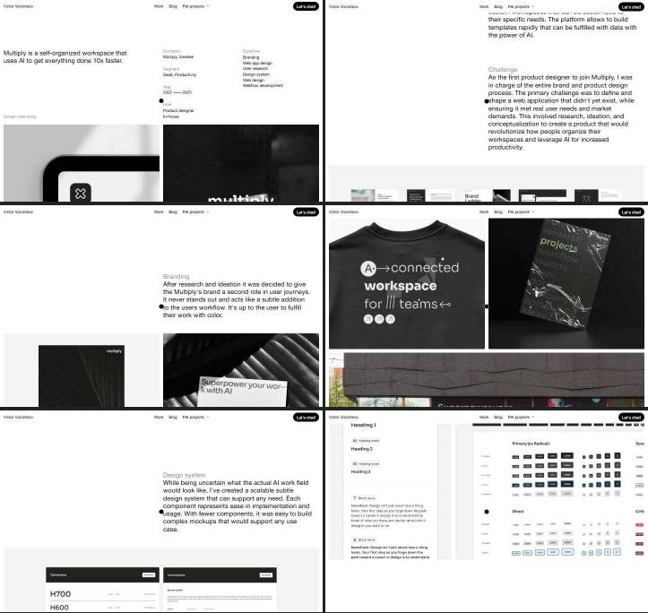
H · Pawly: demo photo / confirmed report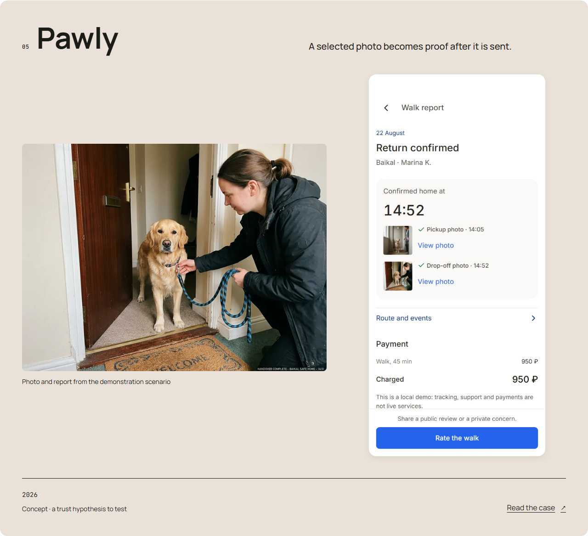
Dounar · архив homepage / TopNote. Black Forest просмотрен отдельно live.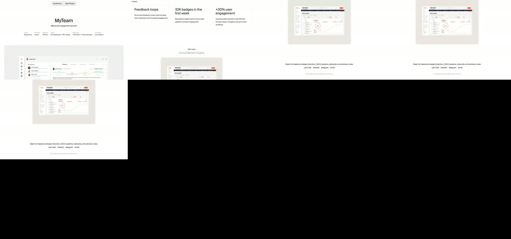
H · Learn: общий материал и два контекстаGarri · native UI / глава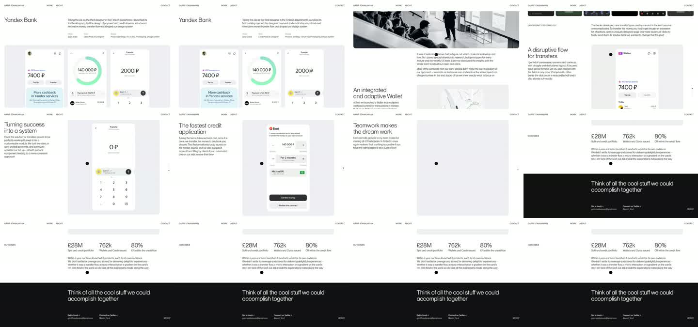
Tubik · смена материала / масштаб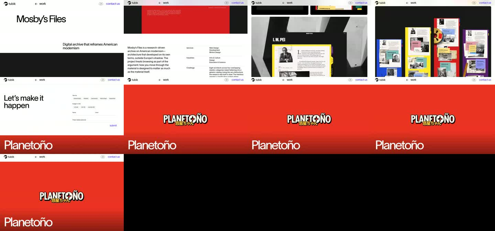
Точный край Portal
Красная обводка самого native компонента. Внешний фон прозрачный; дополнительного скругляющего кропа и белой каймы нет.
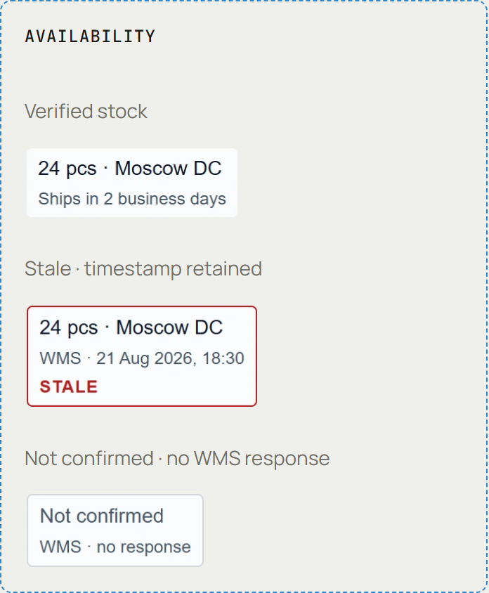
Native edge Learn
Пересъёмка native aside с прозрачными ancestor backgrounds; родные radius, border, текст и действия сохраняются. PNG без ретуши.
Desktop Mobile
Mobile